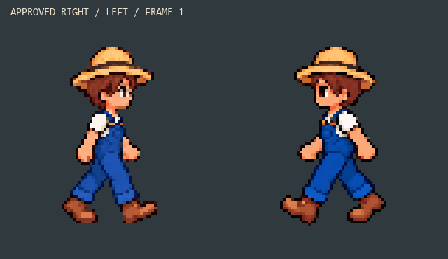
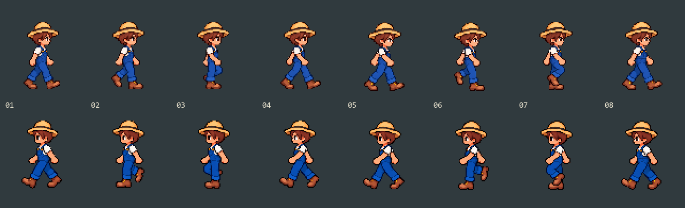

New farmer · Walk left
Approved right and walking left at the same display scale. Eight frames, 10 fps.

Review this movement before the diagonals and game integration.
Inspect individual frames
Frame 1 / 8
Transparent sprite strip
Check both legs in slow motion
Approved right on the first panel; left candidate on the second. Corresponding phases keep their frame order.

All eight poses
Approved right above; candidate left below.

Preview only · Awaiting approval · Proposed character height: about 128 screen pixels